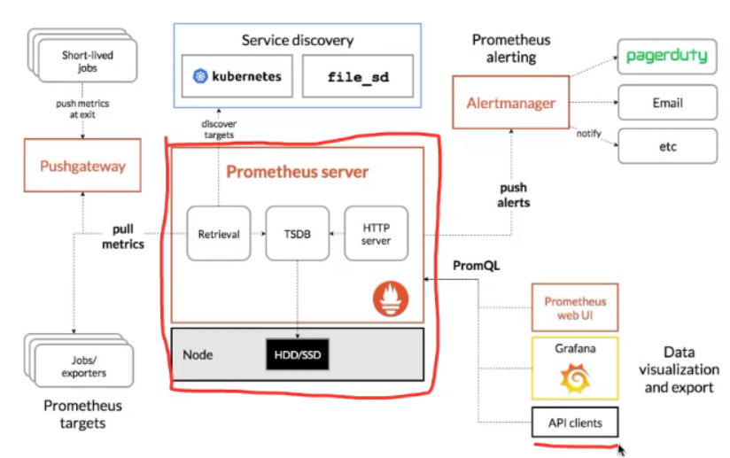
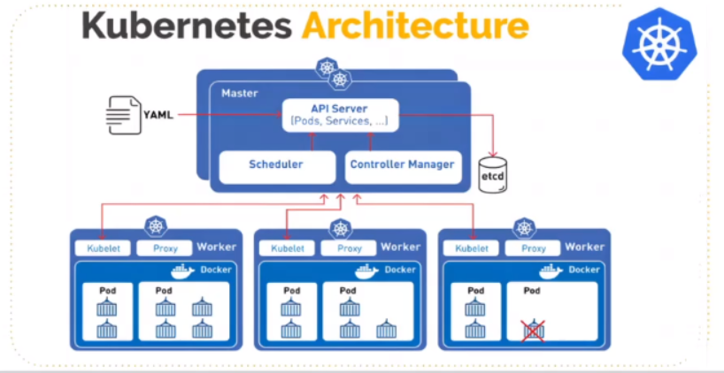
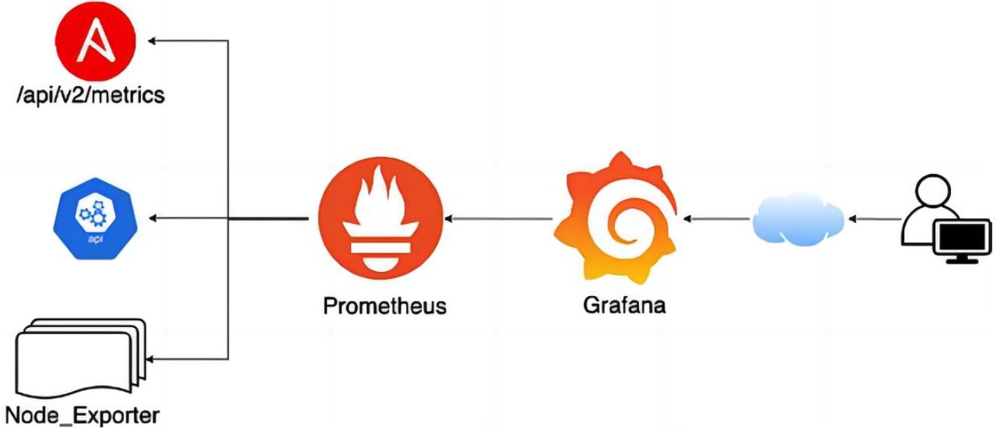
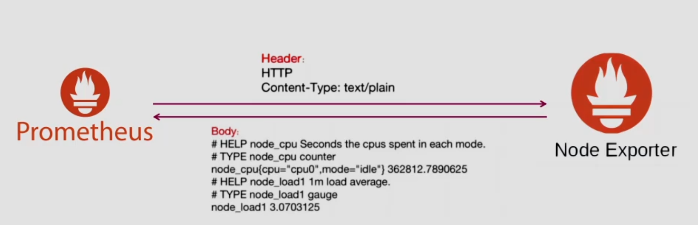
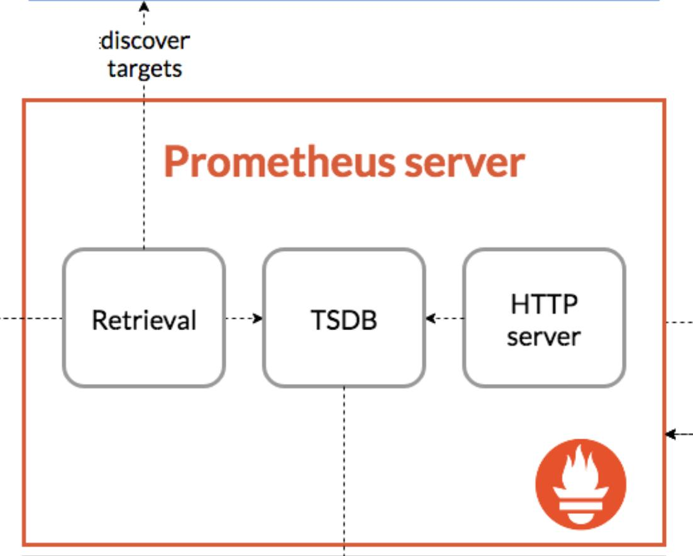
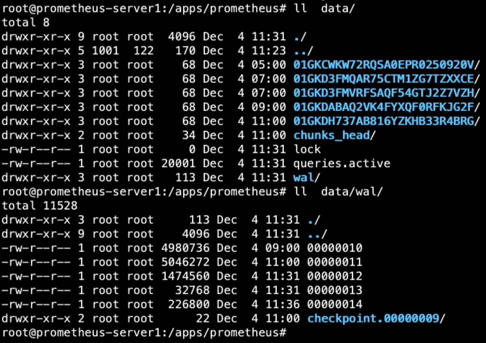
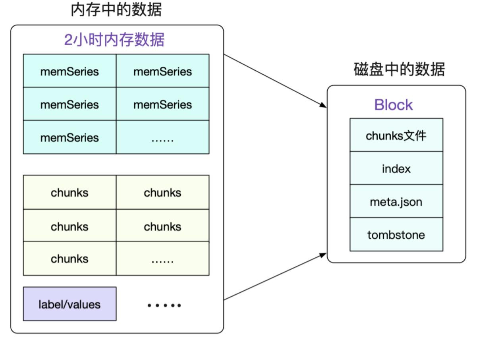
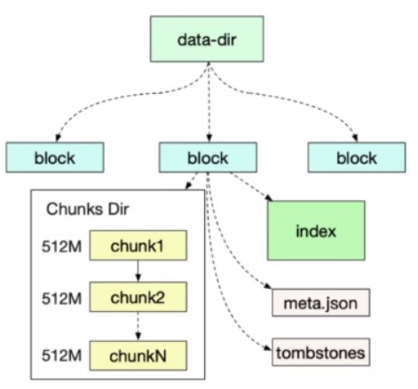

prometheus 简介
prometheus 简介：
-
Prometheus 是基于 go 语言开发的一套开源的监控、报警和时间序列数据库的组合，是由SoundCloud公司开发的开源监控系统，Prometheus于2016年加入CNCF（Cloud Native Computing Foundation,云原生计算基金会）,2018年8月9日prometheus成为CNCF继kubernetes 之后毕业的第二个项目，prometheus在容器和微服务领域中得到了广泛的应用，其主要优缺点如下：
- 使用 key-value 的多维度(多个角度，多个层面，多个方面)格式保存数据，zabbix 的数据是个大 JSON
- 数据不使用 MySQL 这样的传统数据库（有瓶颈），而是使用时序数据库，目前是使用的 TSDB
- 支持第三方dashboard实现更绚丽的图形界面，如grafana(Grafana 2.5.0版本及以上)
- 组件模块化
- 不需要依赖存储，数据可以本地保存也可以远程保存
- 平均每个采样点仅占3.5 bytes，且一个Prometheus server可以处理数百万级别的的metrics指标数据。
- 支持服务自动化发现(基于consul等方式动态发现被监控的目标服务)
- 强大的数据查询语句功(PromQL,Prometheus Query Language)
- 数据可以直接进行算术运算
- 易于横向伸缩
- 众多官方和第三方的exporter(“数据”导出器)实现不同的指标数据收集
CNCF 基金会已经毕业的项目： https://www.cncf.io/projects
Prometheus 架构:
- prometheus server：主服务，接受外部http请求，收集、存储与查询数据等。
- prometheus targets: 静态收集的目标服务数据。
- service discovery：动态发现服务。
- prometheus alerting：调用 alertmanager组件实现报警通知。
- push gateway：数据收集代理服务器(类似于zabbix proxy)。
- data visualization and export： 数据可视化与数据导出(访问客户端)。

图上有两个部分我们没有讲到，一个是Pushgateway组件，另一个是Service discovery部分。这里我再做一个简单的补充。
- Pushgateway：用于接收短生命周期任务的指标上报，是PUSH的接收方式。因为Prometheus主要是PULL的方式拉取监控数据，这就要求在拉取的时刻，监控对象得活着，但是很多短周期任务，比如cronjob，可能半秒就运行结束了，就没法拉取了。为了应对这种情况，才单独做了Pushgateway组件作为整个生态的补充。
- Service discovery：我们演示抓取数据时，是直接在 prometheus.yml 中配置的多个 Targets。这种方式虽然简单直观，但是也有弊端，典型的问题就是如果 Targets 是动态变化的，而且变化得比较频繁，那就会造成管理上的灾难。所以 Prometheus 提供了多种服务发现机制，可以动态获取要监控的目标，比如 Kubernetes 的服务发现，可以通过调用 kube-apiserver 动态获取到需要监控的目标对象，大幅降低了抓取目标的管理成本。
kubernetes 监控简介：
- 容器监控的实现方对比虚拟机或者物理机来说比大的区别，比如容器在k8s环境中可以任意横向扩容与缩容，那么就需要监控服务能够自动对新创建的容器进行监控，当容器删除后又能够及时的从监控服务中删除，而传统的zabbix的监控方式需要在每一个容器中安装启动agent，并且在容器自动发现注册及模板关联方面并没有比较好的实现方式。

数据采集流程、TSDB简介
Prometheus 数据采集流程:
- 基于静态配置文件或动态发现获取目标
- 向目标URL发起http/https请求
- 目标接受请求并返回指标数据
- prometheus server接受并数据并对比告警规则，如果触发告警则进一步执行告警动作并存储数据，不触发告警则只进行数据存储
- grafana进行数据可视化


TSDB 简介及特点：
-
TSDB：Time Series Database , 简称 TSDB，存放时间序列数据的数据库
- 时间序列数据具有不变性、唯一性和按照时间排序的特性。
- 持续周期性写入数据、高并发吞吐：每间隔一段时间，就会写入成千上万的节点的指标数据。
- 写多读少：prometheus每间隔15s就会采集数十万或更多指标数据，但通常只查看最近比较重要的指标数据。
- 数据按照时间排列：每次收集的指标数据，写入时都是按照当前时间往后进行写入，不会覆盖历史数据。
- 数据量大：历史数据会有数百G甚至数百T或更多。
- 时效性：只保留最近一段时间的数据，超出时效的数据会被删除。
- 冷热数据分明：通常只查看最近的热数据，以往的冷数据很少查看。

TSDB 简介：
- Prometheus有着非常高效的时间序列数据存储方法，每个采样数据仅仅占用3.5byte左右空间，上百万条时间序列，30秒间隔，保留60天，大概200多G空间（引用官方资料）。
- https://www.aliyun.com/product/hitsdb #阿里云的商业T时序数据库产品
- 默认情况下，prometheus 将采集到的数据存储在本地的 TSDB 数据库中，路径默认为 prometheus 安装目录的 data 目录，数据写入过程为先把数据写入 wal 日志并放在内存，然后2小时后将内存数据保存至一个新的block块，同时再把新采集的数据写入内存并在2小时后再保存至一个新的block块，以此类推。

- prometheus先将采集的指标数据保存到内存的chunk中，chunk是prometheus存储数据的最基本单元。
- 每间隔两个小时，将当前内存的多个 chunk 统一保存至一个 block 中并进行数据合并、压缩、并生成元数据文件 index、meta.json 和 tombstones

TSDB-block 特性：
block会压缩、合并历史数据块，以及删除过期的块，随着压缩、合并，block的数量会减少，在压缩过程中会发生三件事：定期执行压缩、合并小的block到大的block、清理过期的块，每个块有4部分组成：
~# tree /apps/prometheus/data/01FQNCYZ0BPFA8AQDDZM1C5PRN/
/apps/prometheus/data/01FQNCYZ0BPFA8AQDDZM1C5PRN/
├── chunks
│ └── 000001 #数据目录,每个大小为512MB超过会被切分为多个
├── index #索引文件，记录存储的数据的索引信息，通过文件内的几个表来查找时序数据
├── meta.json #block元数据信息，包含了样本数、采集数据数据的起始时间、压缩历史
└── tombstones #逻辑数据，主要记载删除记录和标记要删除的内容，删除标记，可在查询块时排除样本。
TSDB-block 简介：
每个block为一个data目录中以01开头的存储目录，如下：
~# ls -l /apps/prometheus/data/
total 4
drwxr-xr-x 3 root root 68 Dec 24 05:00 01FQNCYZ0BPFA8AQDDZM1C5PRN #block
drwxr-xr-x 3 root root 68 Dec 27 09:10 01FQXJESTQXVBEPM857SF9XBX7 #block
drwxr-xr-x 3 root root 68 Dec 28 07:20 01FQZYJJ605MEQ7KHBBM09PBVH #block
drwxr-xr-x 3 root root 68 Dec 28 07:20 01FQZYJJABE4JGM85TXJ25WESQ #block

prometheus数据简介：
-
metric: 指标，有各自的metric name， 是一个key value(键值)格式组成的某个监控项数据。
- node_load1 0.21
-
labels：标签，用于对相同名称的指标进行删选，一个指标可以同时有多个不同的标签。
- node_network_receive_packets_total{device="eth0"} 109464
- node_network_receive_packets_total{device="lo"} 178
-
samples：样本，存在于TSDB中的数据，有三部分组成：
- 指标(包含metric name和labels) 值(value, 指标数据) 时间戳(指标写入的时间)
-
series：序列，有多个samples组成的时间序列数据